Collaborative Learning Web App UX Case Study
Designing an effective and satisfying collaborative learning platform for students and instructors
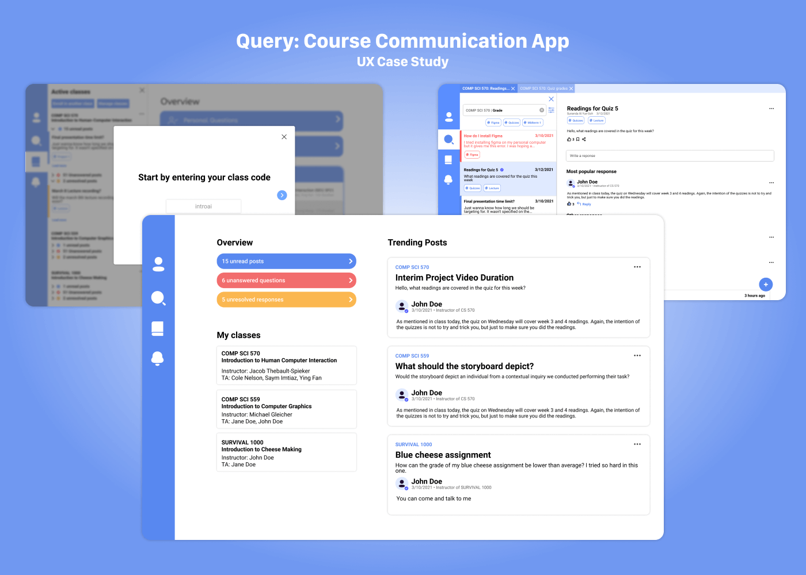01/ Overview
Course communication application that allow instructors to inform students about course logistics, and allow students and instructors to discuss course topics such as Piazza has becoming more relevant especially at the times of online instruction.
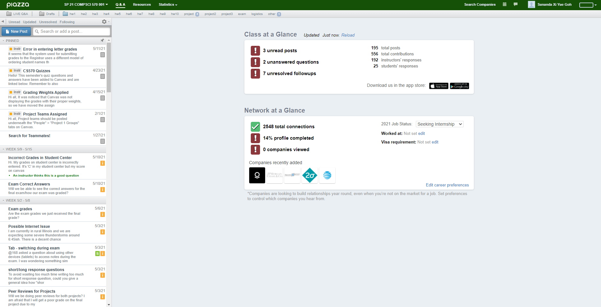Piazza is a favorable application used by many students and instructors. However, the current design implementation causes students to use it purely based on their personal needs rather than the good of the whole community.
In this project, we aim to redesign Piazza's interaction model and its' UI to provide a more user-centric experience for students and instructors.
This is a 4-week group project collaborated with Vera Wei & Katherine Fu.
02/ Research - Contextual Inquiry
We chose to use the Master-Apprentice model of contextual inquiry allowed us to be in the shoes of the user in their physical context. Through contextual inquiry, we were able to understand how our users complete their daily tasks and where frustrations or confusions happen. This allowed us to understand each group of our users in-depth and build work models for each of the participants for the user research study.
Because of the scope of the project, we were only able to conduct contextual inquiry on three research participants. To comply with the COVID-19 safety precautions, the research was conducted virtually over video conferencing tools.
Two of our participants for the contextual inquiry were teaching assistants, while the other participant was a student.
03/ Data Collection and Analysis
In this phase, we analyze the data we collected from context inquiry in couple of ways. First, we performed Affinity Diagramming to discover hidden patterns in our data. After that, we built work models such as Flow Model, Sequence Model, Artifact Model, Cultural Model & Physical Model.
Affinity Diagrams - Discovering patterns
After clustering the post-it notes, we rank each category by severity. Red represents categories that caused severe frustrations among the users, while green represents categories that can be addressed if we have extra time.
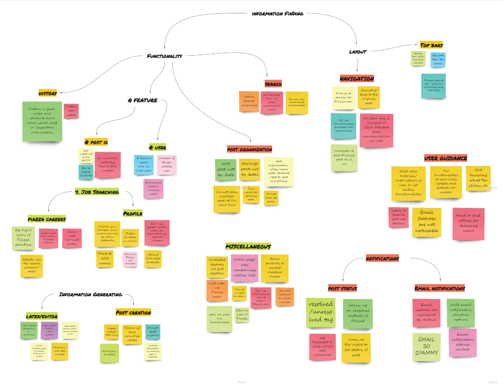Work Models
Flow Models
We found out that the flow model of the two instructors are very similar. Hence, we decided to abstract the flow models based on the users' role - student and teaching assistants.
The flow models allowed us to understand the interaction between users of different role in the system and their main task of using the system.
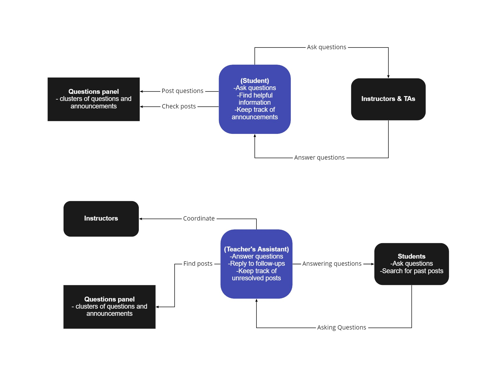Sequence Models
Since the sequence models for both teaching assistants are similar, we decided to create a congregated sequence model for the role of teaching assistants.
The sequence models allowed us to understand the flow of the users' task based on their role in the system, and at which action or screen does breakdowns or frustrations happen.
We found out that Teaching Assistants use the platform because it is their job to help answer questions in the platform. The follow a systematic way to answer as much questions that were unresolved as they could to perform their duty.
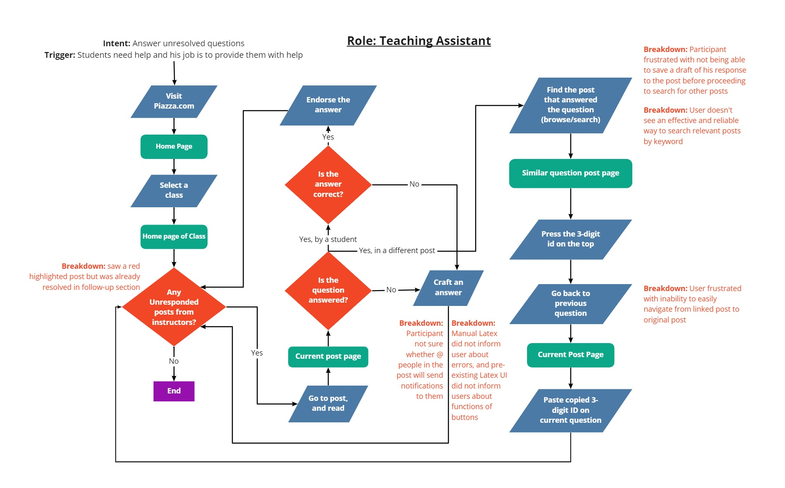Due to the very small sample size, we could not say this with high confidence, but we found out that students typically only use the platform when they have specific questions in mind. They would then proceed to performing actions that answer their doubt. It is less likely that they will participate in answering other's questions.
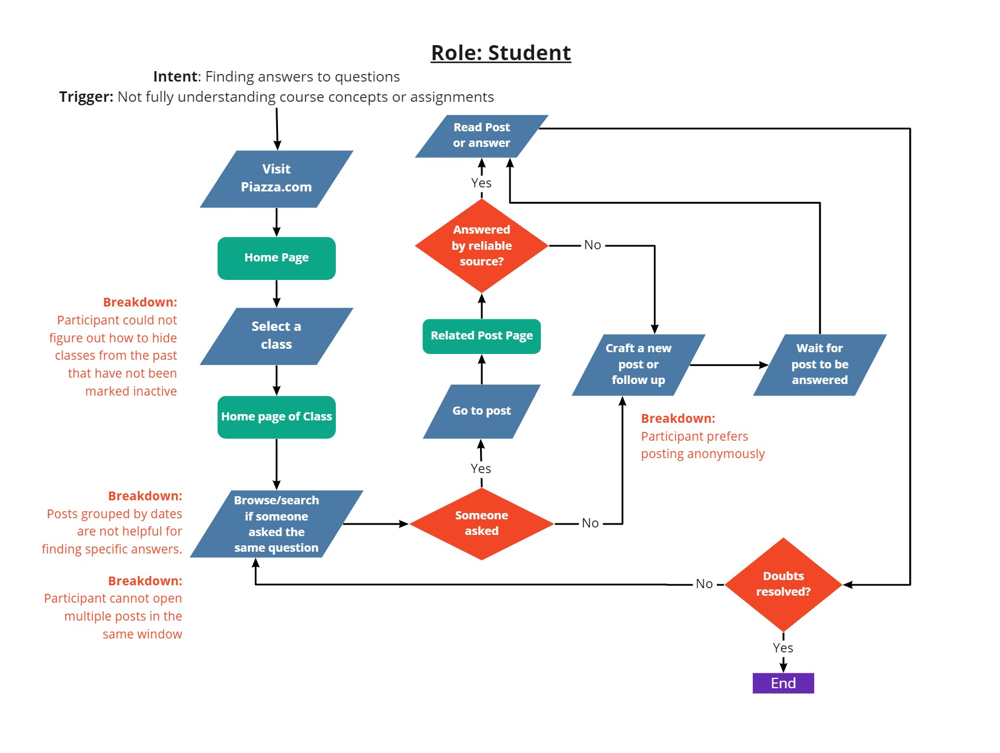Artifact Models
The artifact model allowed us to identify which part of the application causes the breakdown or frustrations.
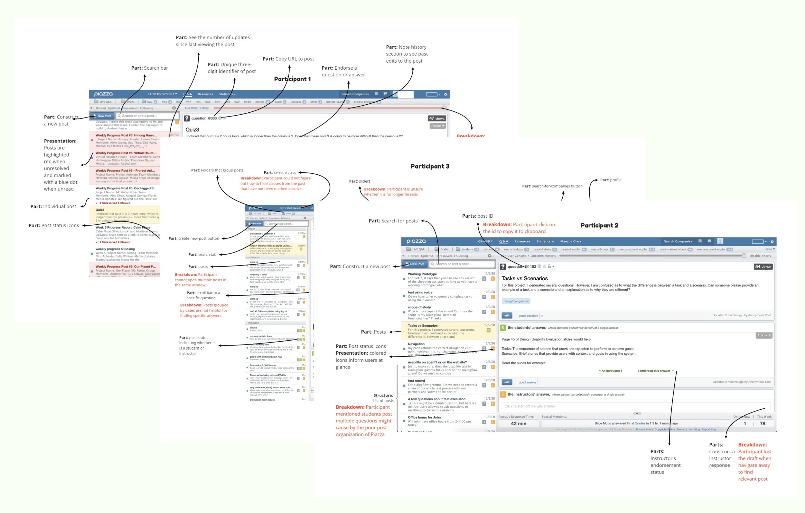Physical & Cultural Models
We drew out the physical and cultural models for each of our participants. However, We found that they did not provide us any useful information.
04/ Key Findings
1. Cluttered UI: Most of the frustrations happen because of the cluttered UI within the platform. There were a lot of irrelevant or less-used functions. Some features were hidden and the users
were unaware of their existence. For example, the job and networking feature were never used by any of our research participants in their daily job and the home page were ignored by the participants.
2. Confusing features: A fair amount of frustrations happened because the users were unsure about what certain buttons or features do. For example, one of our participants was unaware whether drafts
would be saved.
3. Too much context switches: We also found out that a lot of times because searching, browsing, and cross-referencing happens a lot in the platform, the platform did not offer an easy way for users
to easily navigate between several posts easily.
4. Poor search and post organization: The pre-existing "tags" are based on course logistics (such as homeworks, exams) rather than course topics. This made it difficult for students to search for a
specific topic or question they are looking for. Coupled with the inability to sort based on topics, students tend to create posts of which the questions were already asked by their peers.
05/ Ideation
Storyboard
First, the user got confused about the course concept. Then they went to the platform and tried to search for similar questions but could not found any similar questions. Hence, the user crafted a new post and went back to study while waiting for the responses. When someone responded to the post, they received a notification on their phone. The user returned to the platform, and saw that their problems were finally resolved.
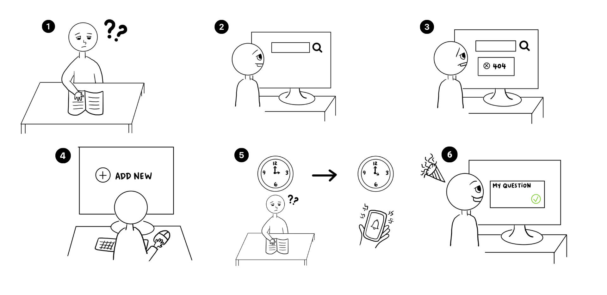Lo-fi prototypes
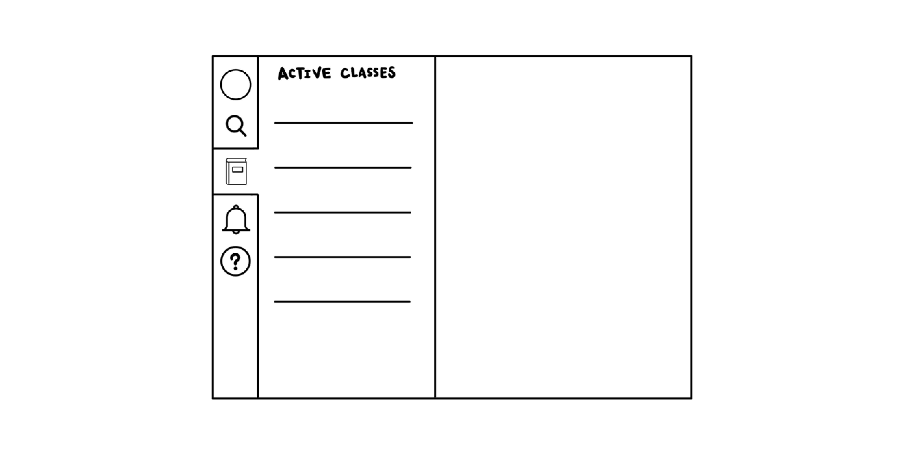
The problem: Cluttered UI
The solution: Refreshed the user interface for a more modern look, and only include features that were frequently used by the users.
Most notably, we created a navigation bar on the right
to provide easy access to crucial features of the platform:
1. Search: Since search is so heavily used regardless of the user's role, we think it is beneficial for them to access search regardless of where they are.
2. Notifications: Previously, when an instructor respond to a question or when a student posted a follow up question, users have to either opt in for email notifications (which leads to email spam)
or constantly check the platform for updates. With a notification system built in, students does not have to constantly refresh the platform in order to receive the latest update about the status of their posts.
This ensures students can receive updates about their questions and doubts, and ensure that instructors would not accidentally miss out on follow up questions asked by students.
The problem: Poor search experience
The solution: We plan to incorporate a more contextual tags. When a user create a new post, the platform will generate tags suggestions based on the context of the post. When another user is
searching, trending tags and related tags will be suggested to the user, allowing them to find the post they intended easier.
The problem: Too much context switch, making cross referencing hard.
The solution: We plan to introduce tabs to the platform. This creates a centralized workplace for users to open multiple posts at the same time. Previously, when the user click on a post, they will
be redirected to the post they just clicked at, and there is no easily way to navigate back to the previous post except for the "back" function. With the tab feature, the user can choose to open a post in a new tab
so they can avoid losing their current context.
Even less cluttered UI: We plan to remove all unneccesary features and buttons that were not part of the user's core task and goals.
Hi-fi prototypes
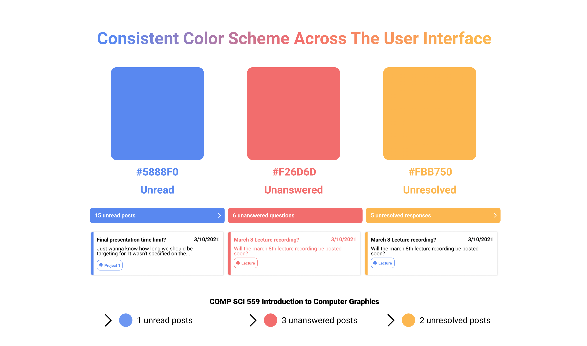To create a consistent experience, we have define the three main color scheme in our interface, each represent a specific meaning in the interface.
Home screen - overview, classes, trending posts
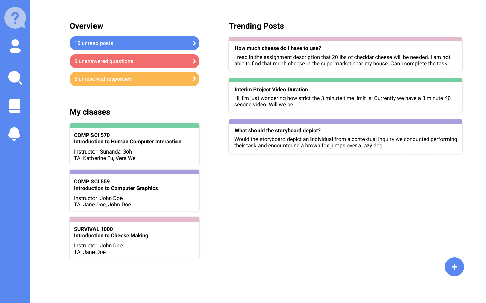In the old implementation, there's no home screen. The home screen provides an overview for the user's classes. This includes number of unread, unanswered, and unresolved posts across all classes that the user is enrolled in for the semester. It also shows all the classes the user is enrolled in, so they can quickly access the class they intended to. Finally, it also shows some trending posts that the user might not want to miss out on.
Enrolling made easier
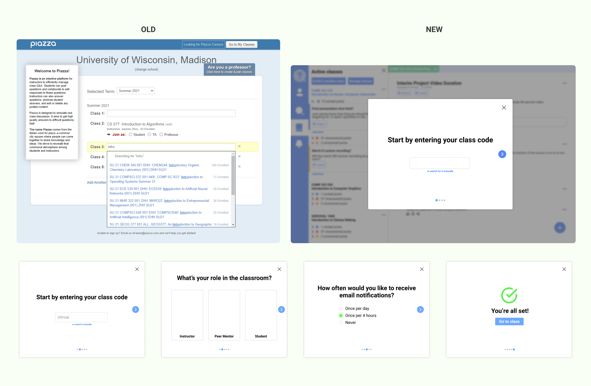One of the flaws of the old implementation, revealed in the contextual inquiry, is that users have to explicitly go to the settings to change the notification settings of a class. Because of its' hidden nature, users might not know that they have the ability to change the notifications. Hence in the redesigned enrolling system, we change it into a step-wise onboarding experience, and making sure that they explicitly choose the notifications preference they want for each course.
Class Overview - Clearer indicators and more useful information
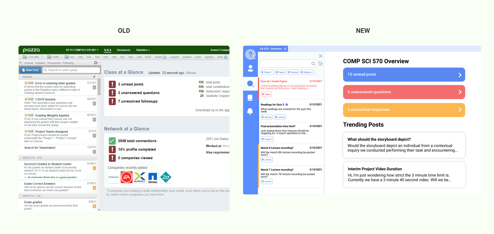The class overview page is minimally refreshed. Instead of three red exclaimation mark on the old interface, we utilized the three defined color scheme to differentiate these categories. This allowed users to be able to read the correct information easier without having to read the textual information of the category. In addition, the "jobs" feature is completely removed from our implementation. Instead, we replace the jobs feature with trending post of the current class. These changes are consistent with the home screen.
Posts and Search - Minor refresh
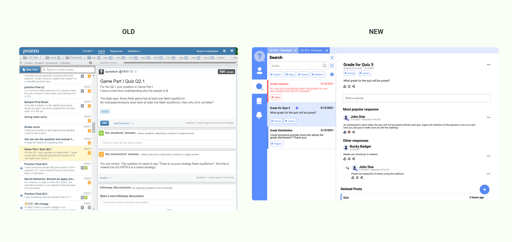We employ the if not broken, don't change philosophy here. The Master-Detail layout works perfect. Furthermore, the indicator on the left whether an instructor has answered, or if the post is unanswered or unresolved is something our research participant used extensively during their browsing process. Hence, we plan to keep these with a minor refresh to the looks. Utilizing the same 3-color scheme we defined earlier, the user can know the status of the post by looking at the color of the post. In addition, we plan to include tags so that user could know the topic of the post before clicking into them.
To support the user's need of cross-referencing, we incorporate a tab feature, so the user does not have to lose context of their current work or the post they are looking at.
On the post itself, we did changes in the layout. In the old implementation, responses are split into instructor's response, student's response, and follow-ups. It was a wiki-style board that any students can change the student response and any instructor can change the instructor's response. The problem is it is hard to keep track of changes made to the student's response and replies could not be made on the responses. Therefore, we believe a typical forum-style layout would make more sense, with the instructor-endorsed or most upvoted response being on top of other responses. Furthermore, students can identify an instructor with the blue checkmark on their profile picture.
Related posts are also provided at the bottom of the post if students were still confused about the course topics and would like to explore similar post.
We also moved all actionable buttons to the bottom of all responses. Previously, these buttons were not grouped together, making it difficult for users to know what features were available to them.
Class Sidebar
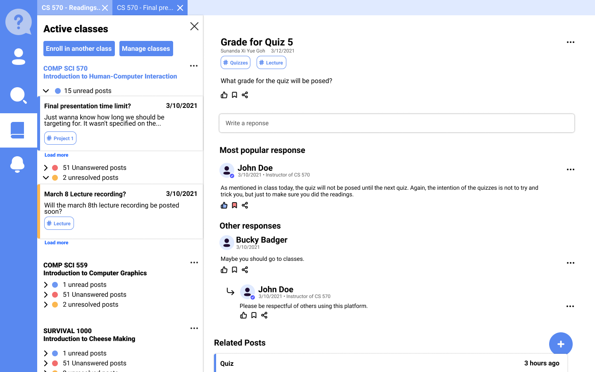Previously, the user has to select a class before they can see any further information about the class. We plan to incorporate a class sidebar that provides a more in-depth overview of each classes. The user has quick and easy access to unread/unanswered/unresolved posts whereever they are.
Rich format links
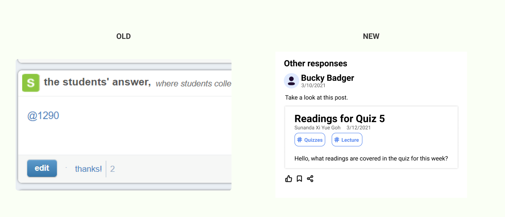The problem: To link to another post, users have to use the three-digit identifier of the post. The id number provides no context of the post.
The solution: When the user paste it on the platform, we plan to generate a rich format visual to provide context to the post.
06/ Usability Testing
Now comes to most important part of the ideation process - testing! We performed the usabillity test with three participants with three different scenarios of varying difficulty using the hi-fi Figma interactive prototypes. For each scenario, we measured:
- Number of times participants get frustrated or confused
- Task completion rate
The usability testing is a nerve-racking process for our team as we figure out whether our design solution did address the problems we identified from the original design solution.
Results and Findings
We plot out graphs to visualize the metrics we collected in our usability testing. The plots are broken down to subtasks of scenarios.
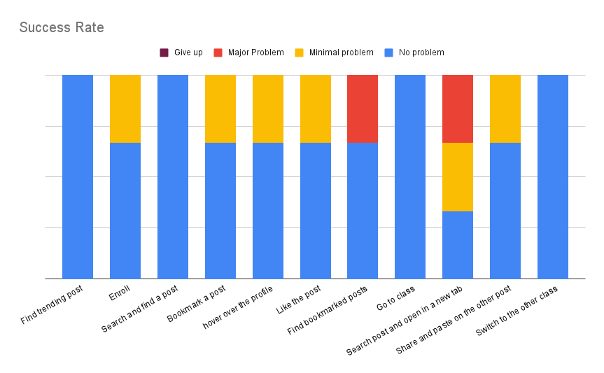 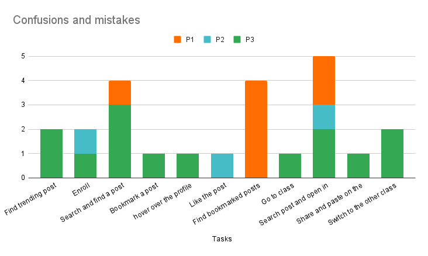The average SUS Usability Score we collected is 79, which is a higher than average score.
At a higher level, it seems that the success rate of tasks for the design solution is high, but with some confusions. This might be caused by the fact that the users are interacting with an application they were not familiar with. Further tests with learnability metrics have to be conducted before that assumption could be made.
In particular, the tasks - searching posts and opening in a new tab, search and find a post, and find bookmarked posts were the tasks with higher confusion rate and lower success rate.
Since the confusion rates are particularly high, we asked our participants the reasons those concerns or confusions happen. The reasons are:
- On the Home page, color coding the classes, which is correlated to the trending post is not obvious at first glance and takes unneccesary time to cross reference the colors, and the too colorful UI is exerting stress to their eyes.
- The search feature was confusing because the participants weren't sure whether they are searching within the current classes or all of the classes they were enrolled in.
Making changes
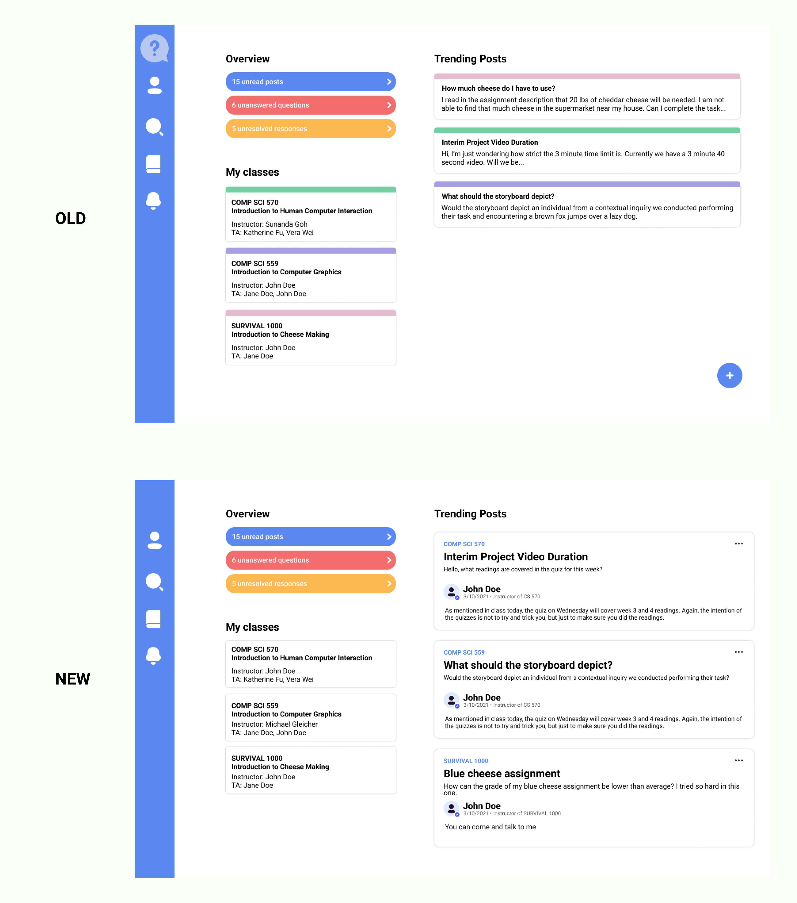The problem: Classes card are too color heavy and meaning of color cannot be inferred directly.
The solution: Remove colors, and use traditional text.
Bonus changes: Include popular response on trending post to provide more infomation at a glance.
The problem: Search scope was unclear.
The solution: Clearly communicate out the scope of the search.
Bonus changes: Remove bookmark and share of responses because responses does not provide any meaning without the post. Also
included the like count for better communication.
07/ Conclusion and Reflections
This is a very challenging project for our team as it is our first user experience case study. Here's the main takeaway from the project.
Our mistakes
Due to our inexperience, the usability testing did not ran as smoothly as we imagined. The metrics we chose are not the best reflection of the usability of the system. Other metrics such as learnability should be taken into consideration. The instructions given to usability testing participants were also lack clarity, causing some confusions, which pollute the data we collected.
Our users were naiively defined. We defined our users based on their role in the system, but it would be better if we define our users by creating personas.
What we hope to do differently
Due to COVID-19 restrictions, the contextual inquiry and usability testing were performed virtually. We hope to have the opportunity to perform onsite contextual inquiry and usability testing as we believe that we can better our participants.
Due to the time constraint of the project, we could only perform contextual inquiry and usability testing on three participants each. If we had more time and resources, increasing the participants in both the contextual inquiry and usability can reflect the usability of the system better as we could detect outliers.
Connect with me!
👋👋👋
Open to any job and collaboration opportunities, or even a coffee chat! Feel free to connect with me with any of the options below.